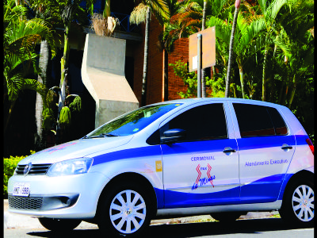

A Eterna Morada investe em sua frota de veículos próprios, disponibilizando a seus clientes como diferenciais inovadores. Nossos veículos são modernos e adequados e específicos para cada finalidade, sendo Apoio à família, o transporte e cortejo fúnebres, e Apoio Cerimonial.Realizamos serviços funerários, remoções ou traslados em toda Minas Gerais. Atuamos ainda em todo o Brasil e no exterior, com amplaexperiência em remoções e traslados internacionais, com fornecimento de urnas adequadas de acordo com a necessidade e legislação,para remoções interestadual ou em outros Países. Atendemos todas as determinações da ANVISA.
Naturais da época para Ornamentação do corpo ou Edredom de luxo, véu adulto luxo, duas coroas de flores naturais da época com palmas (2,10 cm).
Oferecemos aos nossos clientes acompanhamento e Serviço de apoio para à família personalizado com profissional de Assistência Social e realização de cerimonial.Nosso Atendimento tem o intuito de humanizar essa hora da perda, levando as pessoas a uma maior compreensão e valorização da vida.
Acompanhamento Personalizado para liberação de documentos e do corpo em Hospitais e onde se fizerem necessário. Prestamos todas as orientações aos familiares sobre as providências necessárias a execução dos serviços na residência, velório e cemitério (assessoria para as formalidades administrativas); acompanhamento para registro de óbito em cartório e expedição da guia de sepultamento e certidão de óbito.
